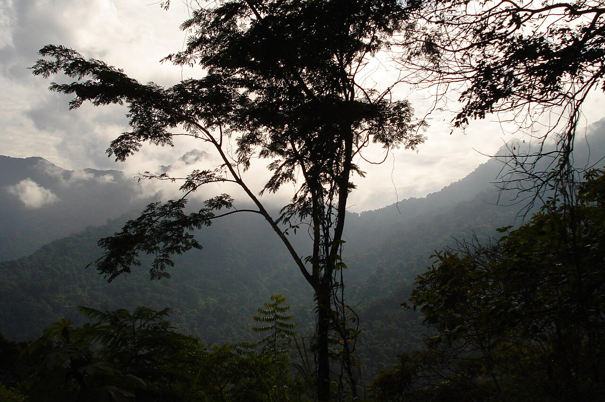
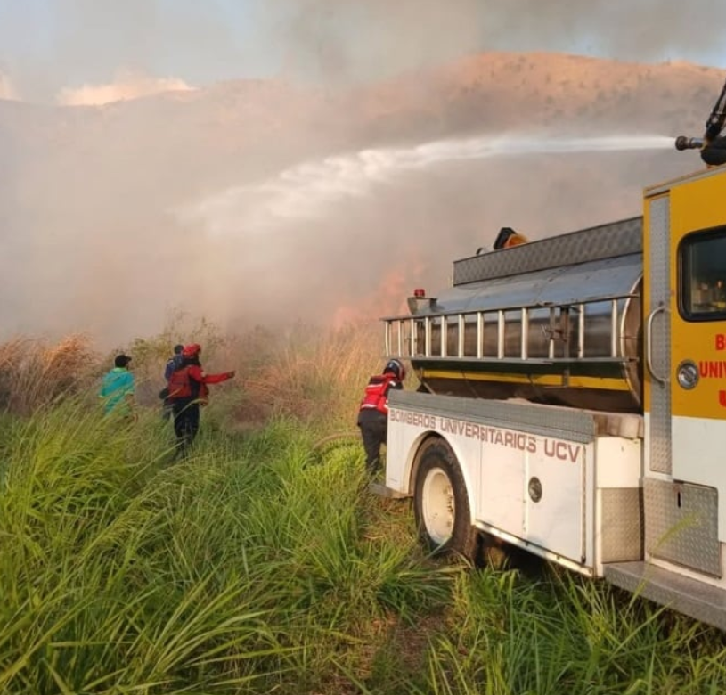

Atlas Temático de Indicadores Ambientales |
Cuenca Río
Guey

Límites UCV Maracay
Límites geográficos de la UCV Maracay
 }})
Precipitaciones
Visualización interactiva de lluvias mensuales y promedios anuales (1973-2015).

Suelos
Caracterización de suelos Facultad de Agronomía Campus Maracay

Vegetación
Plantación de Pimentones Facultad de Agronomía Campus Maracay

Relieve
Tipo de relieve de la UCV Facultad de Agronomía Campus Maracay

Hidrografía
Tipo de hidrografía de la UCV Facultad de Agronomía Campus Maracay

Abrae
Áreas Bajo Régimen de Administración Especial Facultad de Agronomía Campus Maracay

Incendios
Frecuencia de incendios en la Facultad de Agronomía Campus Maracay
© 2025 Atlas Temático de Indicadores Ambientales - UCV
Diseño Realizado por Neisha Toussaint.